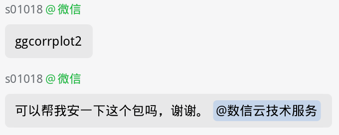

服务器售后答疑#
请及时修改群昵称为服务器用户名，便于技术团队定位您！

1.计算平台与环境支持#
服务器硬件与网络故障排查（宕机、网络中断、磁盘/内存异常等）
操作系统及预装软件的安装、升级与已知bug修复
数信云自建镜像配置与加速，目前已经搭建cran, bioconductor, conda的镜像站
大语言AI模型部署、加载与调用指导
2.用户环境与软件配置#
生信环境搭建与管理
R、Python 包下载安装及依赖冲突诊断与解决
常用生信软件（质控QC、比对、组装、定量等）安装与性能优化
脚本编写、调试及代码性能优化建议
3.生物信息学流程基础指导#
生信数据预处理
常见分析流程参数设置与方案推荐
结果解读与常见错误排查
注意事项：#
服务器使用期间提供完全免费、不计次数的答疑服务，技术团队常驻微信群在线，实时响应。硬件故障等紧急问题优先响应，其它问题按提问先后顺序解答。
为生信入门用户提供全面免费的生信分析教程，内容涵盖 Linux 基础命令操作（文件/目录管理、权限设置、进程监控）、环境配置、镜像源配置与下载加速，以及大语言AI模型使用方法等关键知识。
我们会持续完善在线答疑手册，力求覆盖大多数问题，但并非所有问题都能当场解决，敬请谅解。